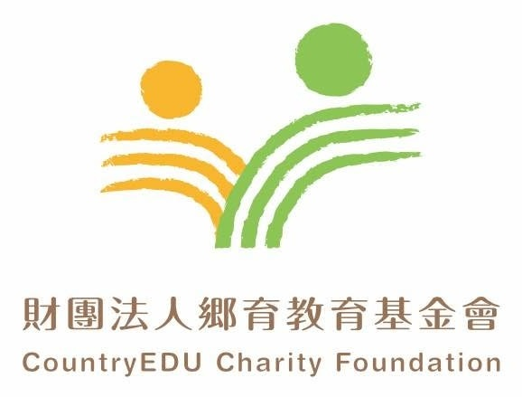

小額同行
NT$300- 以一筆輕鬆無負擔的心意，成為青年尋路路上的同行者
- 適合第一次認識鄉育的你

方案與金額
以下是幾個建議的捐款級距，你也可以自訂金額。長期定期定額支持正在規劃中（金流串接後開放），現階段歡迎先來信表達支持意願——無論單筆或未來定期，每一份心意都會回到地方青年的培力現場。
小額同行
NT$300尋路夥伴
NT$1,000深度支持
NT$3,000你的方式
自訂金額金額為建議級距，亦可自訂｜線上刷卡與定期定額金流串接中，開放前歡迎以 Email 或聯絡表單表達捐款意願；鄉育為依法設立之財團法人，完成捐款後將依規定開立收據。
捐款用途
鄉育把每一份投入，轉化為可被追蹤、可被看見的教育影響力。你的捐款不只是一筆善款，而是讓更多地方與經濟弱勢青年走進尋路課程、在真實情境中練習能力，並留下屬於自己的成長證據。
協助偏鄉與非都會地區的青年，降低資訊與資源落差，更早接觸真實世界的選擇與機會，走進 16 週結構化的尋路課程。
支持青澀芷蘭協會 × 經濟弱勢青年賦能等公益方案，以線上課程突破地域限制，陪伴弱勢青年建立自信與視野。
透過前後測、課程資料與學術研究合作，讓青年的能力被記錄、被理解，也讓你的支持成為可被追蹤的影響力。
捐款用途與財務運用，將以基金會年度報告與影響力報告對外揭露（報告檔案：待補）。
常見問題
以下整理了關於捐款的常見問題。若有未列出的疑問，歡迎直接與我們聯絡，由鄉育團隊協助你完成支持。
鄉育為依法設立的財團法人，完成捐款後將依規定開立捐款收據；收據與報稅相關說明會在收據中一併提供。完整的開立流程細節仍在確認中，確認後將於本頁更新（待補）。
自 2025 年完成勸募字號申請後，社會大眾即可以小額捐款支持鄉育的青年培力方案。依《公益勸募條例》規定，正式的勸募許可文號將於本頁與頁尾公開揭露（文號：待補）。
線上刷卡與定期定額捐款金流正在串接中，開放後將於本頁提供安全的線上捐款連結。在此之前，歡迎先來信告訴我們你想支持的金額與方式，由團隊協助後續捐款流程。
為保障你的權益，請勿自行匯入任何未經基金會正式公告的帳戶。正式的捐款帳戶與金流資訊，將於金流開放後在本頁公告；在此之前，請先透過 Email 或聯絡頁與我們聯繫。
你的捐款會用於支持地方青年培力、挹注經濟弱勢青年的公益線上課程，以及累積青年的成長證據與研究，詳見上方捐款用途。整體財務運用將以基金會年度報告與影響力報告揭露。
立即捐款
線上刷卡捐款金流串接中；在開放前，歡迎先來信告訴我們你想支持的金額與方式，我們會回覆完整的捐款管道、收據與勸募資訊。
勸募許可文號：待補（依《公益勸募條例》揭露）｜線上金流串接中，正式捐款帳戶將於開放後正式公告，請勿自行匯入任何未公告帳戶。